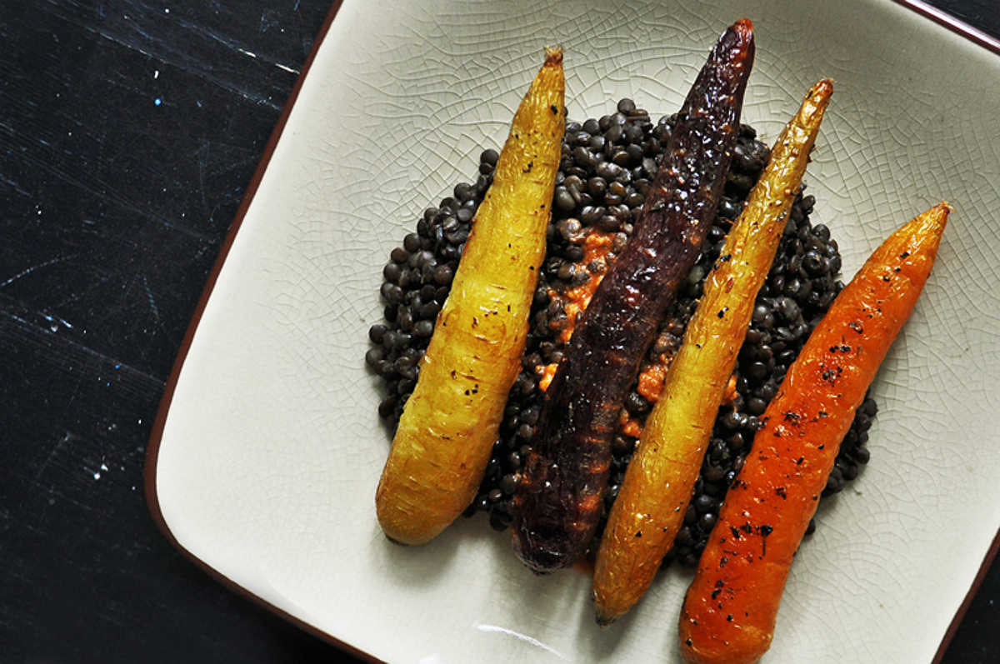

roasted carrots with beluga lentils
2 servings — 30 minutes
Our oven has been working overtime these days, we've been baking and roasting food almost everyday. We picked up a pack of heirloom carrots at the market last weekend, threw them in the oven with a bit of oil, and served them over a bed of beluga lentils, topped it with a spicy peanut butter sauce.
Roasted carrots are sweet, a nice change from eating them raw.
Beluga lentils aren't the cheapest kind you can get, but we like them because they hold their shape well.
Credits: The idea to make a recipe with beluga lentils was inspired by Meike Peters' beluga lentil salad recipe.
 heirloom carrots8
heirloom carrots8 olive oil15 ml
olive oil15 ml thyme5 g
thyme5 g sea salt5 g
sea salt5 g black pepperpinch
black pepperpinch
carrots
- Preheat oven to 200 °C (400 °F)
- Wash 8 organic heirloom carrots, but do not peel them. Dry the carrots, and then toss them with 15 ml (1 tsp) of olive oil and 5 g (1 tsp) of dried thyme.
- Lay on a baking sheet and sprinkle with 1.25g (1/4 tsp) of salt and some black pepper. Bake for 25 minutes, making sure to flip the carrots halfway through.
 sriracha30 ml
sriracha30 ml peanut butter33 g
peanut butter33 g soy sauce60 ml
soy sauce60 ml japanese rice vinegar30 ml
japanese rice vinegar30 ml
sauce
- Mix 30 ml (2 tbsp) of sriracha, 33 g (2 tbsp) peanut butter, 60 ml (1/4 cup) soy sauce and 30 ml (2 tbsp) Japanese rice vinegar in a small bowl.
 beluga lentils115 g
beluga lentils115 g vegetable bouillon375 ml
vegetable bouillon375 ml
lentils
- Wash 115 g (1/2 cup) of dry beluga lentils. Put 375 ml (~1 1/2 cup) of vegetable bouillon in a pot and add the lentils, bring to a boil.
- Reduce heat to medium and simmer for 25 minutes — don't let them cook for too long or they'll get too mushy. If the lentils seem cooked but haven't absorbed all of the water, strain them out.
- Set the beluga lentils on a plate with a bit of sauce and top with 4 roasted carrots!